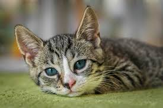
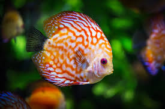

Pets
Dogs
Dogs are known for their loyalty, intelligence, and playful nature. They come in various breeds and sizes, making them suitable for different lifestyles.
Cats

Cats are independent creatures that can provide companionship and entertainment. They are known for their grace, agility, and ability to purr.
Fish

Fish are low-maintenance pets that can add a touch of tranquility to your home. They come in a wide variety of colors and shapes, and observing them can be relaxing.